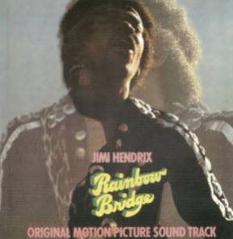

<main class="window">
    <div class="clearfix">
        
        <div>
            Rainbow Bridge is a compilation album by American rock musician Jimi Hendrix. 
            It was the second posthumous album release by his official record company and is mostly composed of recordings Hendrix made in 1969 and 1970 
            after the breakup of the Jimi Hendrix Experience. Despite the cover photo and subtitle Original Motion Picture Sound Track, 
            it does not contain any songs recorded during his concert appearance for the 1971 film Rainbow Bridge. 

            Continuing in the vein of The Cry of Love, the first official posthumous Hendrix album, Rainbow Bridge explores new guitar styles and textures. 
            All the songs, except for a solo studio version of "The Star-Spangled Banner", are written by Hendrix and mostly performed with Mitch Mitchell on drums and Billy Cox on bass. 
            
            Rainbow Bridge contains five songs that Hendrix included on proposed track listings for his fourth studio album:
             "Dolly Dagger", "Earth Blues", "Room Full of Mirrors", "Hear My Train A Comin'" (also known as "Getting My Heart Back Together Again"), 
             and "Hey Baby (New Rising Sun)"."Room Full of Mirrors" was added to Voodoo Soup in 1995 and all except the live "Hear My Train A Comin'" 
             were included on First Rays of the New Rising Sun in 1997, which were attempts at presenting the double album Hendrix was working on at the time of his death.
      
         
    <ul>
     <h2>Some of the Tracks</h2>
        <li>Dolly Dagger </li>
        <li>Earth Blues </li>
        <li>Pali Gap </li>
        <li>Room Full of Mirrors </li>
        <li>Star Spangled Banner (studio version) </li>
        <li>Look Over Yonder </li>
        <li> Hear My Train A Comin' </li>
        <li>Hey Baby (New Rising Sun)  </li>
        
      </ul>
        </div>
    </div>
</main>